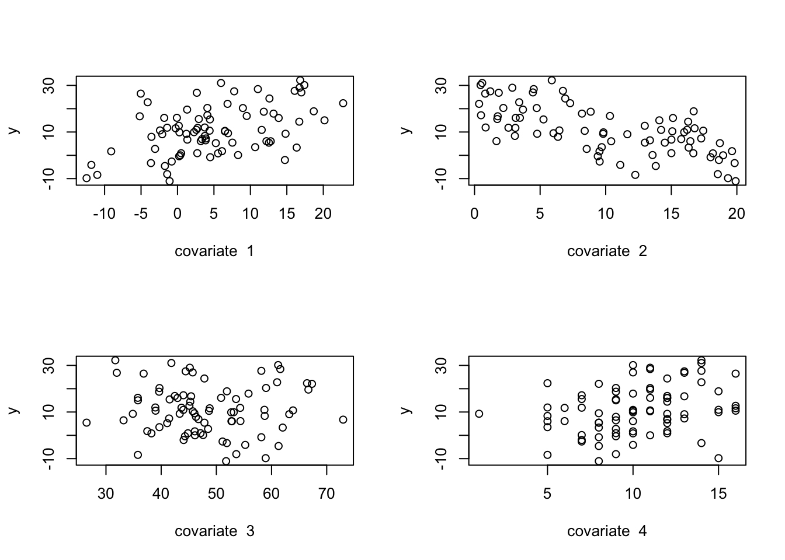
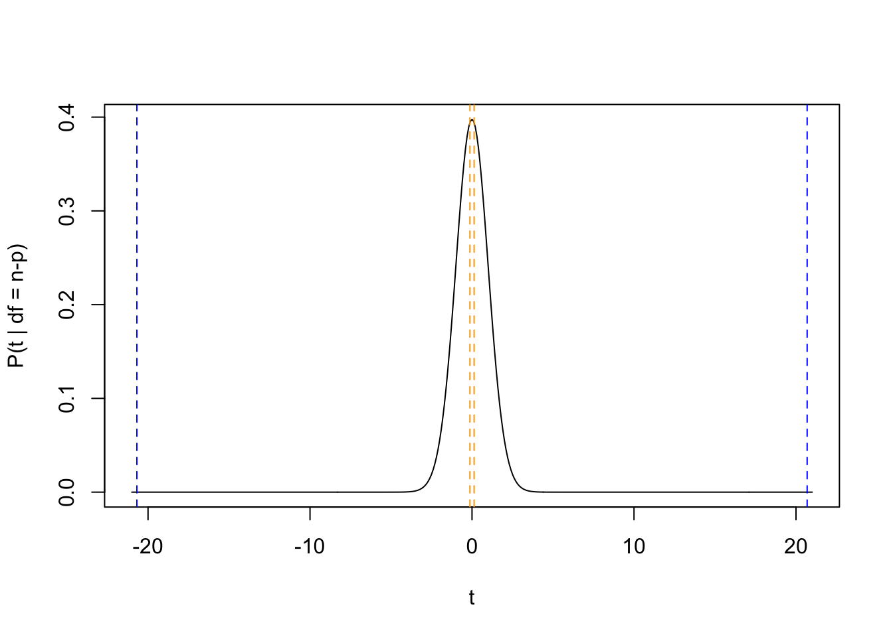
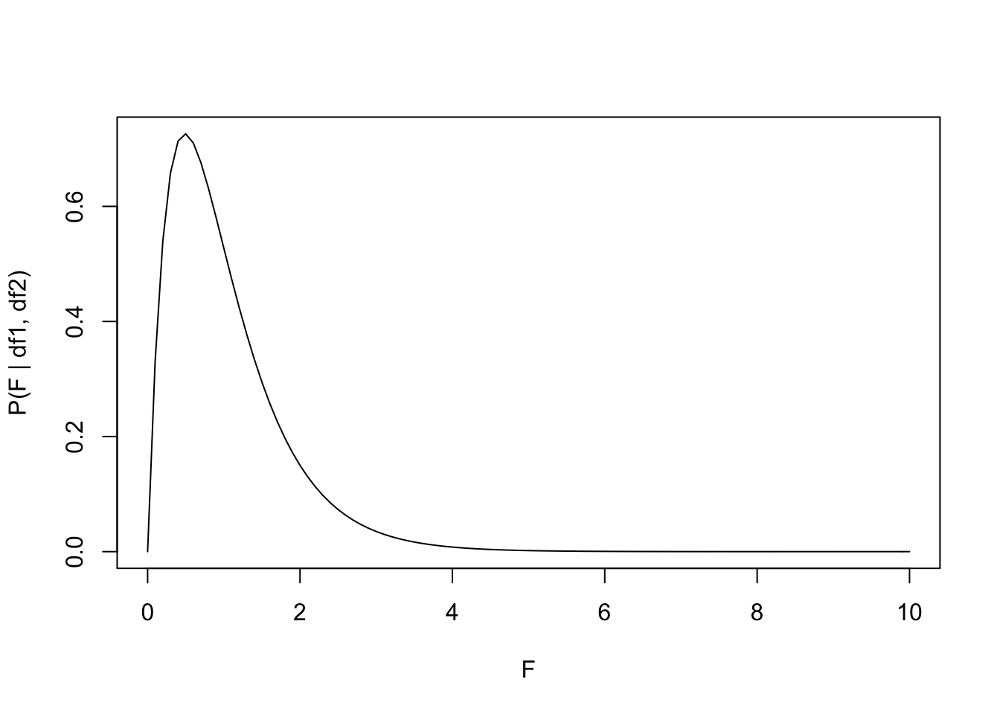

Here we are going to build on the lecture material by comparing manual calculations of hypothesis tests versus the metrics reported by the lm() function.
First let’s generate data, in the same way we did for multiple linear regression in Chapter 4.
n=80n_covariate=4p=n_covariate+1betas=vector("numeric", length =p)xmat=matrix(0, nrow =n, ncol =p)sigma=2.25# Column for interceptxmat[,1]=1# Generate the covariate data randomly:set.seed(5)xmat[,2]=rnorm(n, mean =5, sd =8)xmat[,3]=runif(n, min =0, max =20)xmat[,4]=rchisq(n, df =50)xmat[,5]=rpois(n, lambda =10)# Set the betas:betas[1]=1.0betas[2]=0.75betas[3]=-1.2betas[4]=0.0betas[5]=1.8# Calculate the observed 'y', adding residual errory=xmat%*%betas+rnorm(n, mean =0, sd =sigma)par(mfrow=c(2,2))for(iin2:p){plot(y~xmat[,i], xlab =paste("covariate ", i-1))}

# Create a data.framemy_df=data.frame(y, xmat[,2:5])head(my_df)
# Run the model, report the summarym1=lm(y~1+X1+X2+X3+X4, data =my_df)m1_summary=summary(m1)m1_summary
Call:
lm(formula = y ~ 1 + X1 + X2 + X3 + X4, data = my_df)
Residuals:
Min 1Q Median 3Q Max
-6.4388 -1.4712 0.2816 1.5305 5.0032
Coefficients:
Estimate Std. Error t value Pr(>|t|)
(Intercept) 1.589838 1.759860 0.903 0.369
X1 0.737086 0.035629 20.688 <2e-16 ***
X2 -1.295274 0.044252 -29.270 <2e-16 ***
X3 -0.003676 0.028481 -0.129 0.898
X4 1.826125 0.088971 20.525 <2e-16 ***
---
Signif. codes: 0 '***' 0.001 '**' 0.01 '*' 0.05 '.' 0.1 ' ' 1
Residual standard error: 2.388 on 75 degrees of freedom
Multiple R-squared: 0.9497, Adjusted R-squared: 0.9471
F-statistic: 354.3 on 4 and 75 DF, p-value: < 2.2e-16
5.2 Tests using the \(t\)-distribution
We typically use the \(t\)-distribution to test the following hypothesis for a specific model coefficient (e.g., an intercept, or a slope): \[H_0: \beta_i = 0\]\[H_A: \beta_i \ne 0\] If \(\beta_i\) is a slope, then we are specifically testing if input variable \(x_i\) has a significant linear relationship with \(y\). Put another way, we are testing whether \(x_i\) has a significant linear effect on \(y\).
The \(t\)-statistic is calculated as follows: \[t_i = \frac{\beta_i - \mu}{SE(\beta_i)}, \quad \text{and}\]\[t_i \sim t(\nu),\]
where \(\mu=0\) represents our null hypothesis, and \(t(\nu)\) is a \(t\)-distribution with \(\nu=n-p\) degrees of freedom. Then we find \(P(t > |t_i|) = 1 - P(t \le |t_i|)\), and we multiple this value by 2 for our two-tailed test, which is then our \(p\)-value for the test.
Let’s manually calculate the \(t_i\) and the \(P(t > |t_i|)\) for input variables \(x_1\), which has a significant positive effect on \(y\), and for \(x_3\), which has no detectable linear effect on \(y\).
## Calculate SE(betas) - We did this in the OLS chapterest_sigma=summary(m1)$sigmaxtx_inv=solve(crossprod(xmat))varcov_betas=xtx_inv*est_sigma^2se_betas=sqrt(diag(varcov_betas))# Degrees of freedomt_df=n-p# extract coef and SE# for X1 and X3coef_x1=coef(m1)[2]se_beta_x1=se_betas[2]coef_x3=coef(m1)[4]se_beta_x3=se_betas[4]# Calculate t_it_x1=(coef_x1-0)/se_beta_x1t_x3=(coef_x3-0)/se_beta_x3# Calculate P(t > |t_i|) = 1 - P(t <= |t_i|)# abs() calculates absolute valuep_x1=1-pt(abs(t_x1), df =t_df)p_x3=1-pt(abs(t_x3), df =t_df)# Create a tablet_table=cbind(rbind(t_x1, t_x3),rbind(p_x1*2, p_x3*2)#Multiply by 2 for two-tailed test)colnames(t_table)=c("t value", "Pr(>|t|)")rownames(t_table)=c("X1", "X3")t_table
t value Pr(>|t|)
X1 20.6876284 0.0000000
X3 -0.1290726 0.8976457
# Compare to summary of lm()## We're extracting just the relevant rows and columns## from the summary table m1_summary$coefficients[c(2,4), 3:4]
t value Pr(>|t|)
X1 20.6876284 1.008681e-32
X3 -0.1290726 8.976457e-01
Although our manual \(p\)-value calculation is zero, what this really means is that the \(p\)-value is so low, that it exceeds the significant digits that are allowed in (computer) memory, which is why the lm()summary output reports the notation Pr(>|t|): < 2.2e-16.
Let’s plot the \(t_i\) on the \(t\)-distribution to see if these \(p\)-values make sense.
tseq=seq(-21, 21, by =0.1)prob_tseq=dt(tseq, df =t_df)plot(prob_tseq~tseq, type ="l", xlab ="t", ylab ="P(t | df = n-p)")abline(v =c(-1,1)*t_x1, lty =2, col ="blue")abline(v =c(-1,1)*t_x3, lty =2, col ="orange")

We can see that the \(t\)-statistic for input variable \(x_3\) has a very high probability density, suggesting that the chances that the null hypothesis is true (i.e., \(\beta_3 = 0\)) is high. In contrast, the \(t\)-statistic for input variable \(x_1\) has a very low probability density, suggesting that we have enough evidence to reject the null in support of the alternative hypothesis (i.e., \(\beta_1 \ne 0\)).
5.3 Tests using the \(F\)-distribution
We can also test the hypothesis: \[H_0: \beta_1 = \beta_2 = \dots = \beta_{p-1} = 0\]\[H_A: \beta_i \ne 0, \quad \text{for at least one } i\]
This test helps us understand if any of the input variables have a significant linear effect on \(y\), which at this point might not be the most useful test. However, later we will use a version of this test to determine which linear combinations of input variables will lead to the best explanation of \(y\).
For the above hypothesis, we calculate the \(F\)-statistic as: \[F_{stat} = \frac{ \frac{SSE(\text{null}) - SSE(\text{full})}{\text{df}_{\text{null}}-\text{df}_{\text{full}}} }{ \frac{SSE(\text{full})}{\text{df}_{\text{full}}} }, \quad \text{and}\]\[F_{stat} \sim F(\text{df}_{\text{numerator}}, \text{df}_{\text{denominator}})\]
The \(SSE(\text{null})\) refers to the sum of squared errors (i.e., residuals) for the null model that takes the form \(y_i = \beta_0 + \epsilon_i\), such that the \(E[y_i] = \beta_0 = \bar{y}\). Because this reduced model only has one coefficient, \(\beta_0\), then the \(\text{df}_{\text{null}} = n - 1\). Note that, following the expression for \(F_{stat}\), the \(\text{df}_{\text{numerator}}\) is equal to \(\text{df}_{\text{null}} - \text{df}_{\text{full}}\), and the \(\text{df}_{\text{denominator}}\) is equal to \(\text{df}_{\text{full}}\).
In this test, we are essentially trying to understand if the full model, which includes all of the input variables in the model, does a better job at explaining the outcome variable compared to a null model that simply explains the data by saying that we should expect to see \(y\) values that are most often close to the mean of \(y\), which equals \(\bar{y}\).
Let’s manually calculate the the \(F_{stat}\) for the above multiple linear regression model, and then calculate the \(p\)-value from the associated \(F\)-distribution. First, we need to estimate a null model, which only has an intercept, which again should be estimated as \(\bar{y}\).
Now we can extract all of the information we need from the respective lm() output.
# Extract the residuals (errors)resid_null=m_null$residualsresid_full=m1$residuals# Sum of Square Errors (SSE)sse_null=crossprod(resid_null)sse_full=crossprod(resid_full)# degrees of freedomdf_null=n-1df_full=n-p# Calculate F_statf_stat=((sse_null-sse_full)/(df_null-df_full))/(sse_full/df_full)f_stat
[,1]
[1,] 354.3369
# Degrees of freedom for the F distribution:df_numerator=df_null-df_fulldf_denominator=df_fulldf_numerator
[1] 4
df_denominator
[1] 75
# Compare this to the lm() output:m1_summary$fstatistic
value numdf dendf
354.3369 4.0000 75.0000
# Visualize the associated F distributionfseq=seq(0, 10, by =0.1)p_fseq=df(fseq, df1 =df_numerator, df2 =df_denominator)plot(p_fseq~fseq, type ="l", xlab ="F", ylab ="P(F | df1, df2)")

Notice how the \(F_{stat} > 350\), which is far outside the range of our figure above, meaning that it has a very low probability density. We can formally calculate the \(p\)-value below:
Again, although this \(p\)-value is showing zero, what this really means is that the \(p\)-value is so low, that it exceeds the significant digits that are allowed in (computer) memory, which is why the lm() output reports the p-value: < 2.2e-16.
# Reminder:m1_summary
Call:
lm(formula = y ~ 1 + X1 + X2 + X3 + X4, data = my_df)
Residuals:
Min 1Q Median 3Q Max
-6.4388 -1.4712 0.2816 1.5305 5.0032
Coefficients:
Estimate Std. Error t value Pr(>|t|)
(Intercept) 1.589838 1.759860 0.903 0.369
X1 0.737086 0.035629 20.688 <2e-16 ***
X2 -1.295274 0.044252 -29.270 <2e-16 ***
X3 -0.003676 0.028481 -0.129 0.898
X4 1.826125 0.088971 20.525 <2e-16 ***
---
Signif. codes: 0 '***' 0.001 '**' 0.01 '*' 0.05 '.' 0.1 ' ' 1
Residual standard error: 2.388 on 75 degrees of freedom
Multiple R-squared: 0.9497, Adjusted R-squared: 0.9471
F-statistic: 354.3 on 4 and 75 DF, p-value: < 2.2e-16
5.4 Goodness of fit with \(R^2\)
The summary of the lm() output also reports the Multiple R-squared, which is also referred to as the coefficient of determination, or simply \(R^2\) of the model. \(R^2\) provides a metric of “goodness of fit” for the model. This value roughly equates to the fraction of the variability in outcome variable \(y\) that is explained by the linear combination of input variables that are included in the model.
\[ R^2 = 1 - \frac{SSE(\text{full})}{SSE(\text{null})}\] Thus, the \(R^2\) is approximately calculating the reduction in residual error that occurs when you add meaningful input variables, compared to the null model that only has an intercept (i.e., predicting \(y\) based on its mean value).
r2=1-sse_full/sse_nullr2
[,1]
[1,] 0.9497436
# Compared to the lm() outputm1_summary$r.squared
[1] 0.9497436
What we see here is that the inclusion of the four input variables in the model explains approximately 95% of the variability in outcome variable \(y\). This makes sense, because we simulated the data \(y\) from a known set of input variables with a known set of coefficients.
What happens to this \(R^2\) value if we remove a meaningful input variable from the model? In other words, what if we didn’t actually know all of the correct input variables to measure in real life that explain \(y\), and we didn’t measure an important one?
# Run a model that does not include input variable X2m2=lm(y~1+X1+X3+X4, data =my_df)m2_summary=summary(m2)# Extract the R^2m2_summary$r.squared
[1] 0.3756416
The \(R^2\) has reduced from 95% to 38%, meaning that without the inclusion of input variable \(x_2\) in our model, we reduce our ability to explain (i.e., predict) the outcome \(y\) by approximately 60%.
5.4.1 Adjusted \(R^2\)
Another measure in the summary of lm() output is an “adjusted” value of \(R^2\), which penalizes the value of \(R^2\) for models that have a lot of parameters (\(p\)) compared to the number of data points (\(n\)).
If you have more parameters (i.e., more input variables) relative to the number of observed data points, then the Adjusted \(R^2\) will be less than \(R^2\). In the model above, we have many data points (\(n=80\)) relative to the number of input variables (\(p-1 = 4\)), so there is only a small difference in the two metrics.
Congratulations!
Look at the summary() of the lm() output. You should now be able to explain (and manually calculate) every value that is printed in that output. You now have a deep understanding of the ordinary least squares (OLS) regression analysis and associated methods of hypothesis-testing.
Source Code
# Hypothesis Testing {#sec-hypothesis}## Generate the data {#sec-data}Here we are going to build on the lecture material by comparing manual calculations of hypothesis tests versus the metrics reported by the `lm()` function. First let's generate data, in the same way we did for multiple linear regression in @sec-ols.```{r}n =80n_covariate =4p = n_covariate +1betas =vector("numeric", length = p)xmat =matrix(0, nrow = n, ncol = p)sigma =2.25# Column for interceptxmat[,1] =1# Generate the covariate data randomly:set.seed(5)xmat[,2] =rnorm(n, mean =5, sd =8)xmat[,3] =runif(n, min =0, max =20)xmat[,4] =rchisq(n, df =50)xmat[,5] =rpois(n, lambda =10)# Set the betas:betas[1] =1.0betas[2] =0.75betas[3] =-1.2betas[4] =0.0betas[5] =1.8# Calculate the observed 'y', adding residual errory = xmat %*% betas +rnorm(n, mean =0, sd = sigma)par(mfrow=c(2,2))for(i in2:p){plot(y ~ xmat[,i],xlab =paste("covariate ", i-1))}# Create a data.framemy_df =data.frame(y, xmat[,2:5])head(my_df)# Run the model, report the summarym1 =lm(y ~1+ X1 + X2 + X3 + X4, data = my_df)m1_summary =summary(m1)m1_summary```## Tests using the $t$-distribution {#sec-ttest}We typically use the $t$-distribution to test the following hypothesis for a specific model coefficient (e.g., an intercept, or a slope):$$H_0: \beta_i = 0$$$$H_A: \beta_i \ne 0$$If $\beta_i$ is a slope, then we are specifically testing if input variable $x_i$ has a significant linear relationship with $y$. Put another way, we are testing whether $x_i$ has a significant linear effect on $y$. The $t$-statistic is calculated as follows:$$t_i = \frac{\beta_i - \mu}{SE(\beta_i)}, \quad \text{and}$$ $$t_i \sim t(\nu),$$ where $\mu=0$ represents our null hypothesis, and $t(\nu)$ is a $t$-distribution with $\nu=n-p$ degrees of freedom. Then we find $P(t > |t_i|) = 1 - P(t \le |t_i|)$, and we multiple this value by 2 for our two-tailed test, which is then our $p$-value for the test. Let's manually calculate the $t_i$ and the $P(t > |t_i|)$ for input variables $x_1$, which has a significant positive effect on $y$, and for $x_3$, which has no detectable linear effect on $y$. ```{r}## Calculate SE(betas) - We did this in the OLS chapterest_sigma =summary(m1)$sigmaxtx_inv =solve(crossprod(xmat))varcov_betas = xtx_inv*est_sigma^2se_betas =sqrt(diag(varcov_betas))# Degrees of freedomt_df = n-p# extract coef and SE# for X1 and X3coef_x1 =coef(m1)[2]se_beta_x1 = se_betas[2]coef_x3 =coef(m1)[4]se_beta_x3 = se_betas[4]# Calculate t_it_x1 = (coef_x1 -0)/se_beta_x1t_x3 = (coef_x3 -0)/se_beta_x3# Calculate P(t > |t_i|) = 1 - P(t <= |t_i|)# abs() calculates absolute valuep_x1 =1-pt(abs(t_x1), df = t_df)p_x3 =1-pt(abs(t_x3), df = t_df)# Create a tablet_table =cbind(rbind(t_x1, t_x3),rbind(p_x1*2, p_x3*2) #Multiply by 2 for two-tailed test)colnames(t_table) =c("t value", "Pr(>|t|)")rownames(t_table) =c("X1", "X3")t_table# Compare to summary of lm()## We're extracting just the relevant rows and columns## from the summary table m1_summary$coefficients[c(2,4), 3:4]```Although our manual $p$-value calculation is zero, what this really means is that the $p$-value is so low, that it exceeds the significant digits that are allowed in (computer) memory, which is why the `lm()``summary` output reports the notation `Pr(>|t|): < 2.2e-16`. Let's plot the $t_i$ on the $t$-distribution to see if these $p$-values make sense.```{r}tseq =seq(-21, 21, by =0.1)prob_tseq =dt(tseq, df = t_df)plot(prob_tseq ~ tseq, type ="l",xlab ="t", ylab ="P(t | df = n-p)")abline(v =c(-1,1)*t_x1, lty =2, col ="blue")abline(v =c(-1,1)*t_x3, lty =2, col ="orange")```We can see that the $t$-statistic for input variable $x_3$ has a very *high* probability density, suggesting that the chances that the null hypothesis is true (i.e., $\beta_3 = 0$) is high. In contrast, the $t$-statistic for input variable $x_1$ has a very *low* probability density, suggesting that we have enough evidence to reject the null in support of the alternative hypothesis (i.e., $\beta_1 \ne 0$).## Tests using the $F$-distribution {#sec-ftest}We can also test the hypothesis:$$H_0: \beta_1 = \beta_2 = \dots = \beta_{p-1} = 0$$$$H_A: \beta_i \ne 0, \quad \text{for at least one } i$$This test helps us understand if *any* of the input variables have a significant linear effect on $y$, which at this point might not be the most useful test. However, later we will use a version of this test to determine which linear combinations of input variables will lead to the best explanation of $y$.For the above hypothesis, we calculate the $F$-statistic as:$$F_{stat} = \frac{ \frac{SSE(\text{null}) - SSE(\text{full})}{\text{df}_{\text{null}}-\text{df}_{\text{full}}} }{ \frac{SSE(\text{full})}{\text{df}_{\text{full}}} }, \quad \text{and}$$$$F_{stat} \sim F(\text{df}_{\text{numerator}}, \text{df}_{\text{denominator}})$$The $SSE(\text{null})$ refers to the sum of squared errors (i.e., residuals) for the null model that takes the form $y_i = \beta_0 + \epsilon_i$, such that the $E[y_i] = \beta_0 = \bar{y}$. Because this reduced model only has one coefficient, $\beta_0$, then the $\text{df}_{\text{null}} = n - 1$.Note that, following the expression for $F_{stat}$, the $\text{df}_{\text{numerator}}$ is equal to $\text{df}_{\text{null}} - \text{df}_{\text{full}}$, and the $\text{df}_{\text{denominator}}$ is equal to $\text{df}_{\text{full}}$. In this test, we are essentially trying to understand if the full model, which includes all of the input variables in the model, does a better job at explaining the outcome variable compared to a null model that simply explains the data by saying that we should expect to see $y$ values that are most often close to the mean of $y$, which equals $\bar{y}$. Let's manually calculate the the $F_{stat}$ for the above multiple linear regression model, and then calculate the $p$-value from the associated $F$-distribution. First, we need to estimate a null model, which only has an intercept, which again should be estimated as $\bar{y}$.```{r}m_null =lm(y~1)coef(m_null)mean(y)```Now we can extract all of the information we need from the respective `lm()` output.```{r}# Extract the residuals (errors)resid_null = m_null$residualsresid_full = m1$residuals# Sum of Square Errors (SSE)sse_null =crossprod(resid_null)sse_full =crossprod(resid_full)# degrees of freedomdf_null = n-1df_full = n-p# Calculate F_statf_stat = ((sse_null - sse_full)/(df_null - df_full)) / (sse_full/df_full)f_stat# Degrees of freedom for the F distribution:df_numerator = df_null - df_fulldf_denominator = df_fulldf_numeratordf_denominator# Compare this to the lm() output:m1_summary$fstatistic# Visualize the associated F distributionfseq =seq(0, 10, by =0.1)p_fseq =df(fseq,df1 = df_numerator,df2 = df_denominator)plot(p_fseq ~ fseq, type ="l",xlab ="F", ylab ="P(F | df1, df2)")```Notice how the $F_{stat} > 350$, which is far outside the range of our figure above, meaning that it has a very low probability density. We can formally calculate the $p$-value below:```{r}#P(F > f_stat) = 1 - P(F <= f_stat)p_f_m1 =1-pf(f_stat,df1 = df_numerator,df2 = df_denominator)p_f_m1```Again, although this $p$-value is showing zero, what this really means is that the $p$-value is so low, that it exceeds the significant digits that are allowed in (computer) memory, which is why the `lm()` output reports the `p-value: < 2.2e-16`. ```{r}# Reminder:m1_summary```## Goodness of fit with $R^2$ {#sec-r2}The `summary` of the `lm()` output also reports the `Multiple R-squared`, which is also referred to as the coefficient of determination, or simply $R^2$ of the model. $R^2$ provides a metric of "goodness of fit" for the model. This value roughly equates to the fraction of the variability in outcome variable $y$ that is explained by the linear combination of input variables that are included in the model. $$ R^2 = 1 - \frac{SSE(\text{full})}{SSE(\text{null})}$$Thus, the $R^2$ is approximately calculating the reduction in residual error that occurs when you add meaningful input variables, compared to the null model that only has an intercept (i.e., predicting $y$ based on its mean value). ```{r}r2 =1- sse_full/sse_nullr2# Compared to the lm() outputm1_summary$r.squared```What we see here is that the inclusion of the four input variables in the model explains approximately 95% of the variability in outcome variable $y$. This makes sense, because we simulated the data $y$ from a known set of input variables with a known set of coefficients. What happens to this $R^2$ value if we remove a meaningful input variable from the model? In other words, what if we didn't actually know all of the correct input variables to measure in real life that explain $y$, and we didn't measure an important one?```{r}# Run a model that does not include input variable X2m2 =lm(y ~1+ X1 + X3 + X4, data = my_df)m2_summary =summary(m2)# Extract the R^2m2_summary$r.squared```The $R^2$ has reduced from 95% to 38%, meaning that without the inclusion of input variable $x_2$ in our model, we reduce our ability to explain (i.e., predict) the outcome $y$ by approximately 60%. ### Adjusted $R^2$Another measure in the `summary` of `lm()` output is an "adjusted" value of $R^2$, which penalizes the value of $R^2$ for models that have a lot of parameters ($p$) compared to the number of data points ($n$).$$\text{Adjusted } R^2 = 1 - \frac{n-1}{n-p} + \frac{n-1}{n-p} R^2$$```{r}adjusted_r2 =1- (n-1)/(n-p) + (n-1)/(n-p)*r2adjusted_r2# Compared to lm() outputm1_summary$adj.r.squared```If you have more parameters (i.e., more input variables) relative to the number of observed data points, then the Adjusted $R^2$ will be less than $R^2$. In the model above, we have many data points ($n=80$) relative to the number of input variables ($p-1 = 4$), so there is only a small difference in the two metrics. ::: {.callout-tip}## Congratulations!Look at the `summary()` of the `lm()` output. You should now be able to explain (and manually calculate) every value that is printed in that output. You now have a deep understanding of the ordinary least squares (OLS) regression analysis and associated methods of hypothesis-testing.:::